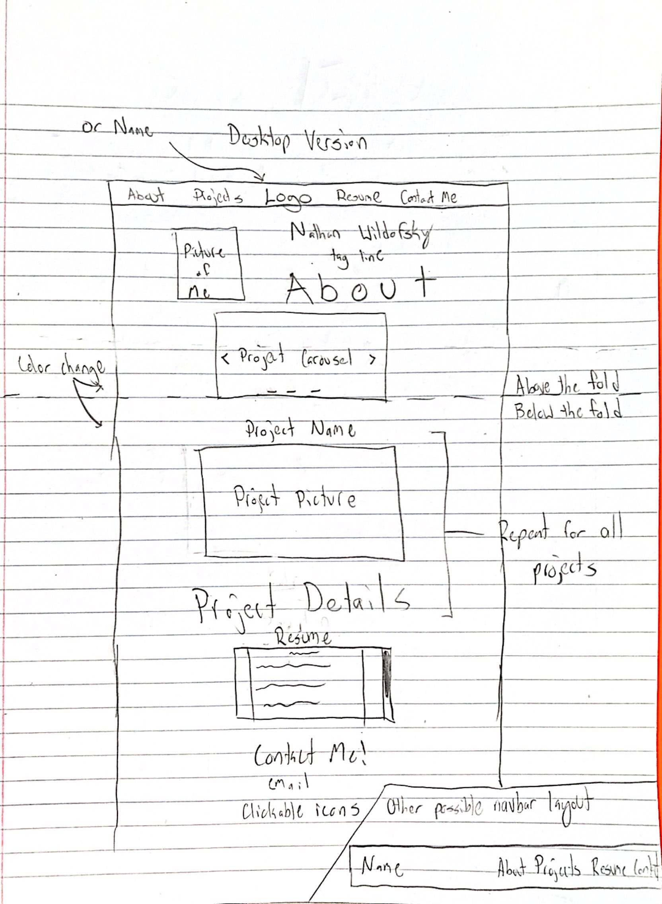

Design Process and Brainstorming
Why does this site exist?
- As a showcase of my best work and a better first impression than my resume
What is this site's goal?
- Intrigue possible recruiters with the site's first landing and keep them interested with my work showcase
- Make me stand out from other possible hires
Who will be using the site?
- Professional recruiters quickly looking over many applicants' resumes and portfolios
What are some characteristics of these users?
- Readyd to skim over the whole site to find anything worthwhile, will only be on the site for a limited time
- Most likely using a desktop or laptop to view with a fast connection, but a site designed for mobile and smaller widths should be designed anyway
Brainstorm Features
- Carousel in first landing with brief information about each project on hover and a picture
- Fixed position navbar at the top of the screen
- About me
- Projects
- Contact me
- Resume
- Possible logo
- Name that links to top of page
- Mobile navebar will have a dropdown menu and name/logo
- Embedded resume pdf with a download and view pdf button
- Contact icons for social media and a form for messages
- Customized form in the footer to make contacting me easier and be able to be done in-site
- Carousel gallery will have brief information so individual project sections should be large enough to allow for a decent amount of descritpion of the development process, what kind of project it was, the challenges I faced, and what I learned
Brainstorm Design
- Modern-looking with pleasant accent colors
- Rounded edges of images and buttons
- Darker theme
- Orange accent
- Blue accent
- Add some gradient colors in place of the accents
Design Sketch
Sources
Placeholder images from placeholder.com
Navbar and Contact Info form font from Bootstrap Framework Bootstrap
Main content font is "Rubik" from google fonts Rubik Font
Navbar and Carousel template from Bootstrap Framework Bootstrap
Notes
- I was not too picky with my placeholder images sizes (they are all the same size) but I did use a image size close to the likely image dimensions my screenshots of my actual projects will be. If my actual image sizes turn out to be very different and mess up the layout of the page, I think my current size is close enough to the aspect ration that an image could span over the section it is in and have some parts of its edges cut off
- I did not try out having images of different sizes in my carousel but I believe my screenshots I use will be of consistent size so there won't be too much of an issue with variability between the images in the carousel
- When adding actual projects to this portfolio I am going to add a more bulleted-style to the longer description of my projects so that recruiters can see important information fast. I am also planning on changing the captions in the carousel when adding projects to contain the most brief and important information, and to make that bigger so it can be seen better when actual images are in the carousel
- To make updates to the content of my portfolio after adding my original projects I will add a new project flexbox and add the image to the carousel. I will either change the project order by just moving the html around or change the order of the flexboxes in css
Back to Portfolio